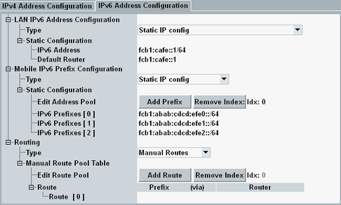

To modify the IPv6 configuration, press the "Config" hotkey and select the tab "IPv6 Address Configuration".
The available settings are described below. For additional information, see "IP Address Configuration Methods".

"Type" selects the method to be used for IPv6 DAU address configuration.
- "Automatic R&S CMW500 Network (standalone)"
Select this value for a standalone test setup. As a consequence, the predefined automatic IP configuration is used. Both the DAU address and the DUT prefixes are configured automatically. No further IP configuration is necessary for IPv6. - "Static IP config"
Select this value for a test setup with connected external network and static IP addresses.
Specify the static IP addresses of the DAU and a default router belonging to the same subnet via parameter "Static Configuration". The DAU sends packets with unknown IPv6 prefix to this default router. - "Autoconfiguration (RA, DHCPv6)"
Select this value for a test setup with connected external network and dynamic autoconfiguration. IPv6 autoconfiguration uses router advertisements (RA) and/or DHCPv6.
This setting is only displayed for "Automatic R&S CMW500 Network (standalone)".
With disabled checkbox, a 64-bit prefix is assigned to the DUT.
With enabled checkbox, a 48-bit prefix is assigned to the DUT via prefix delegation, so that the DUT can build 64-bit prefixes and assign them to other network entities.
This section is only displayed for test setups with connected external network. It is hidden for a standalone test setup ("Automatic R&S CMW500 Network (standalone)").
- "Static IP config"
Select this value to use a statically defined pool of prefixes. Specify the prefix pool via parameter "Static Configuration".
Typically, you enter 64-bit prefixes. To use prefix delegation towards the DUT, enter 48-bit prefixes.
The pool can be modified in the same way as the address pool for IPv4, see "Mobile IPv4 Address Pool". - "DHCP Prefix Delegation"
Select this value to fill the prefix pool dynamically via DHCPv6 prefix delegation. That means, the DAU requests a 48-bit prefix, builds 64-bit prefixes from it and fills the pool with the 64-bit prefixes.
Allows you to configure manual routes for packets sent by the DUT. For destination addresses belonging to the subnet of the DAU or reachable via the default router, you do not need to configure routes.
For other destinations, specify the prefix of the destination subnet and the IPv6 address of the router to be used. The router must belong to the subnet of the DAU.
"Routing Protocols" are not supported in the current software version.
Remote command: